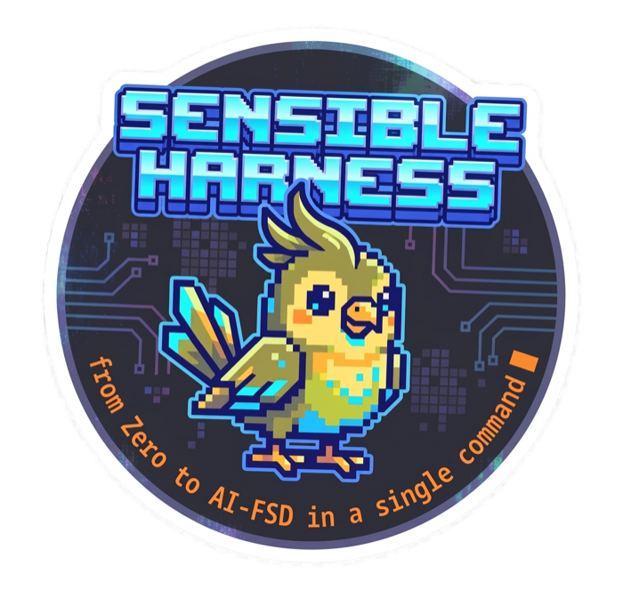
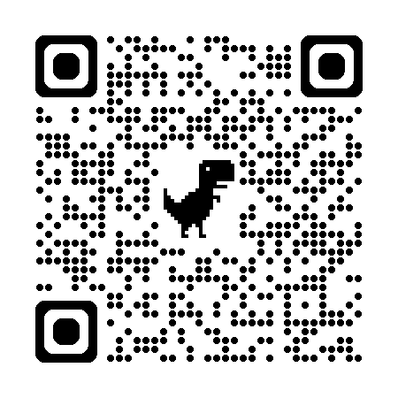
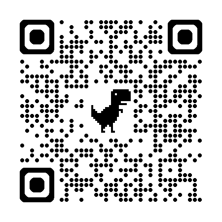

SENSIBLE HARNESS |
SENSIBLE HARNESS |AI-first delivery and maintenance in a single command
HSBC Engineering Week
October 2026 London
Lead Developer
AI-First Software Delivery

Senior AI Product Researcher
AI/Works™

Lead Developer
AI-First Software Maintenance
Access to AI isn't 10× productivity. Generation scales; human review doesn't.
Every team rebuilds its own harness. Learned on the run, absent from capacity planning.
Cognitive debt: AI produces faster than humans can review. We need to build trust to not need to review every line.
No shared conventions, no audit trail, no view of how ready a repo is for agents. Adoption turns fragmented, risky, hard to scale.
sensible-harness▸
agent-ready repo
One command bootstraps any git repo
Agents and engineers run on the same track
As a behavioural agentic harness
Scale AI adoption without scaling the chaos.
Practices we already trust. The agent follows them; it doesn't replace them.
Small slices, shipped and reviewed. Course corrections happen early, not at the end
Test-driven development: red, green, refactor
Many unit tests, fewer integration, fewest end-to-end. Suites stay fast and trustworthy
Atomic and conventional. Each one explains itself and reverts cleanly
A human decides how much to delegate and when to validate
Catches defects before they reach production
init doctor▸
Skills small, reusable▸
Agents BA · Dev · QA
# before: untouched main $ claude agent works with no rules in place
# after $ sensible-harness init $ sensible-harness doctor ✓ harness installed
/onboard-devDev agent and the delivery skills: pickup, tdd, commit, PR, CI, close
/onboard-qaQA agent and assessments: pyramid, CI, pre-commit, qa-test
/onboard-baBA agent and how issues flow into delivery
Each ends with: run /assess-repo
/assess-repo scores it across 10 dimensions, so you know how much you can trust agents on it
Your standards first. Thoughtworks defaults only where you have none.
Score, band and blockers on one page
One per dimension, every finding cited to a file and line
Gaps become tickets, the team delivers them, and the next assessment shows how things have changed since this one
Generated from this repo’s own analysis. Not a template.
/onboard-meUnderstand the repo
/setup-workspaceGet it running
A faster start for every new teammate, with the same context for people and agents. Generated, then owned: committed Markdown your team edits
Routine tasks, one job each: branch, checkout, commit, open PR
The same sequence, chained: pickup → plan → TDD → PR → close
Run the workflows and stop at human gates: /dev /qa /business-analyst
Each step stayed useful on its own. Start with the task your team repeats.
/business-analyst▸Jira ticket
/dev GV-n▸
Ticket check▸
Branch▸
Plan▸
👤 Approve▸
Saved to ticket
# branch: feature/GV-94-hackathon-dinner-rsvp > /tdd # AC 1 → commit > /tdd # AC 2 → commit > /tdd # AC 3 → commit > /open-pr # + token-cost report > /check-ci
Built from the acceptance criteria
PASS FAIL
Close, or address gaps
QA never changes code. It recommends.
/address-pr-comments▸
/check-ci▸
/close-issue
/close-issue checks every AC before mergingTracks token consumption on every agent run.
Configured in the skill itself
Token report posted at task completion
Per-model breakdown and cost estimate
One connected view across your ecosystem finds the root cause faster, and with more certainty
region from service-b’s responseregion (change 3f2a)3f2a removed region from service-b’s response. service-a still requires it.region, add a contract testOperational agents with skills beyond delivery. They connect across your application ecosystem to see the full picture of operations, trace issues to their root cause and propose fixes.
The agent asks the questions, not the human. It removes ambiguity up front and keeps people doing the thinking, so know-how stays in the team.
Every agent has evals criteria that catch when a step drifts from what’s expected. A feedback skill lets users flag what’s working and what isn’t, so the harness keeps improving.
sensible-harness initLead Developer
AI-First Software Delivery

Senior AI Product Researcher
AI/Works™

Lead Developer
AI-First Software Maintenance